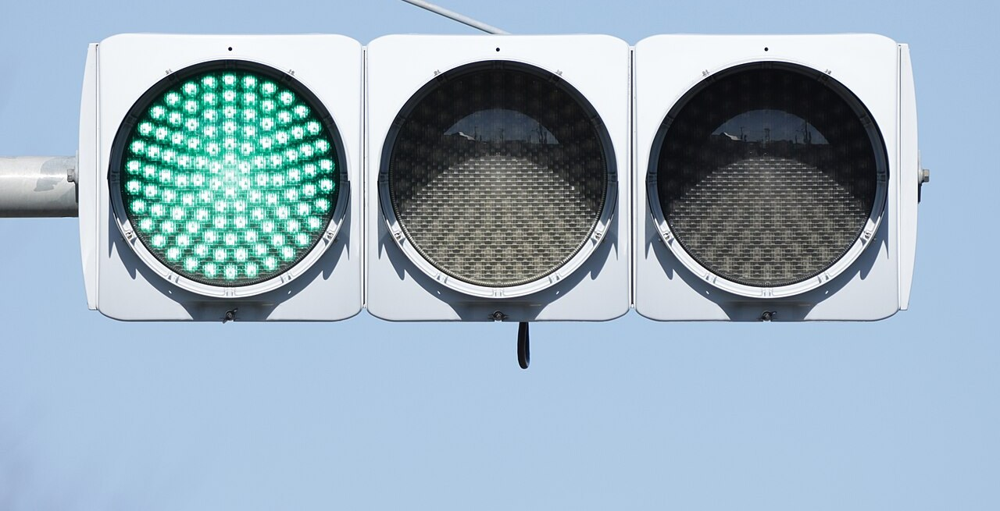
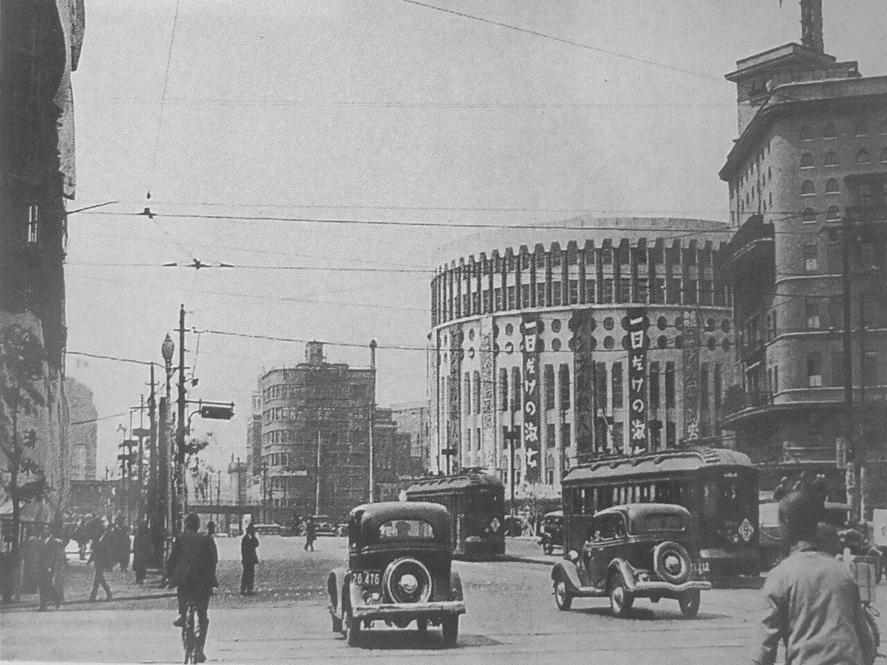
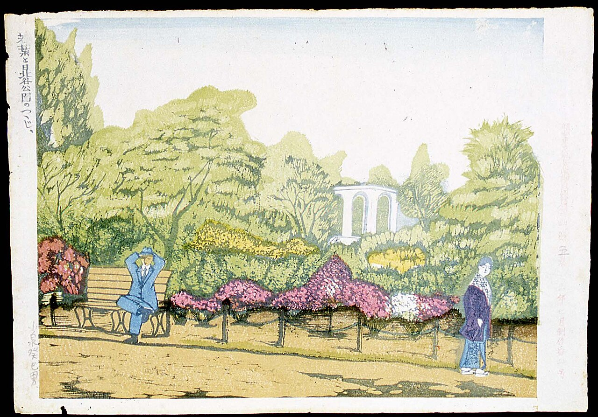
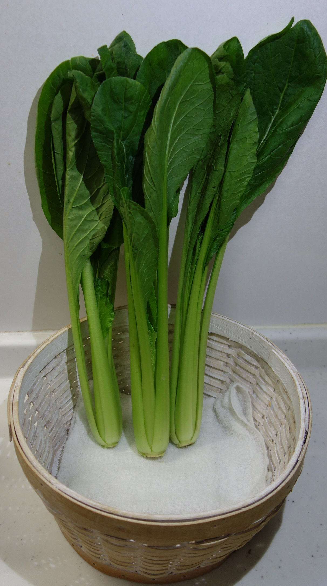
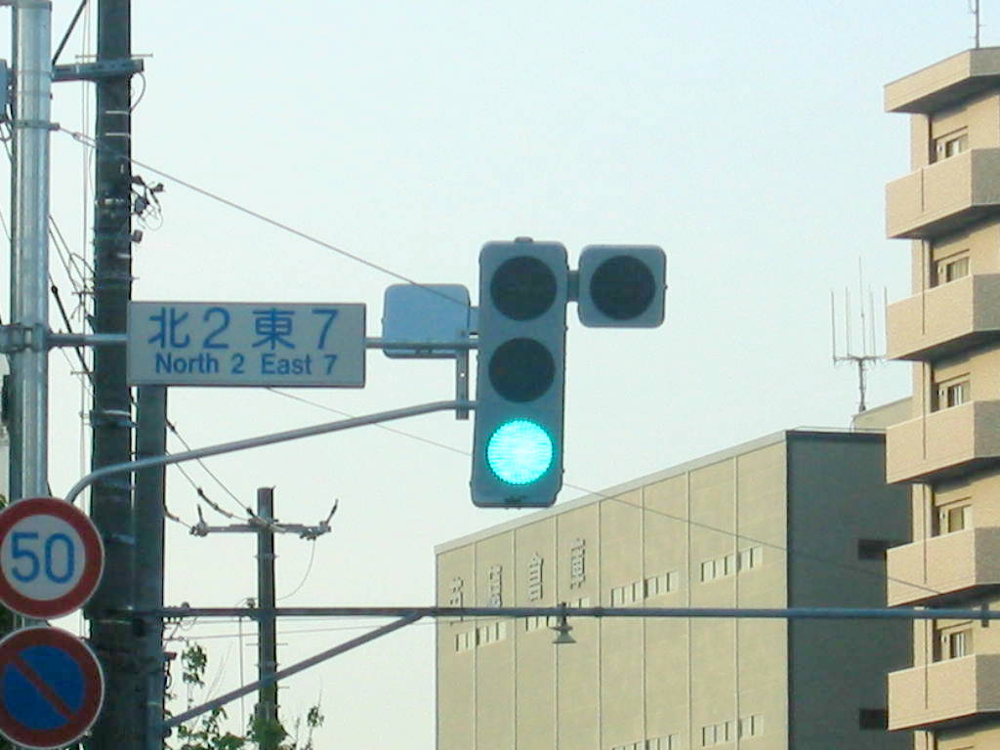
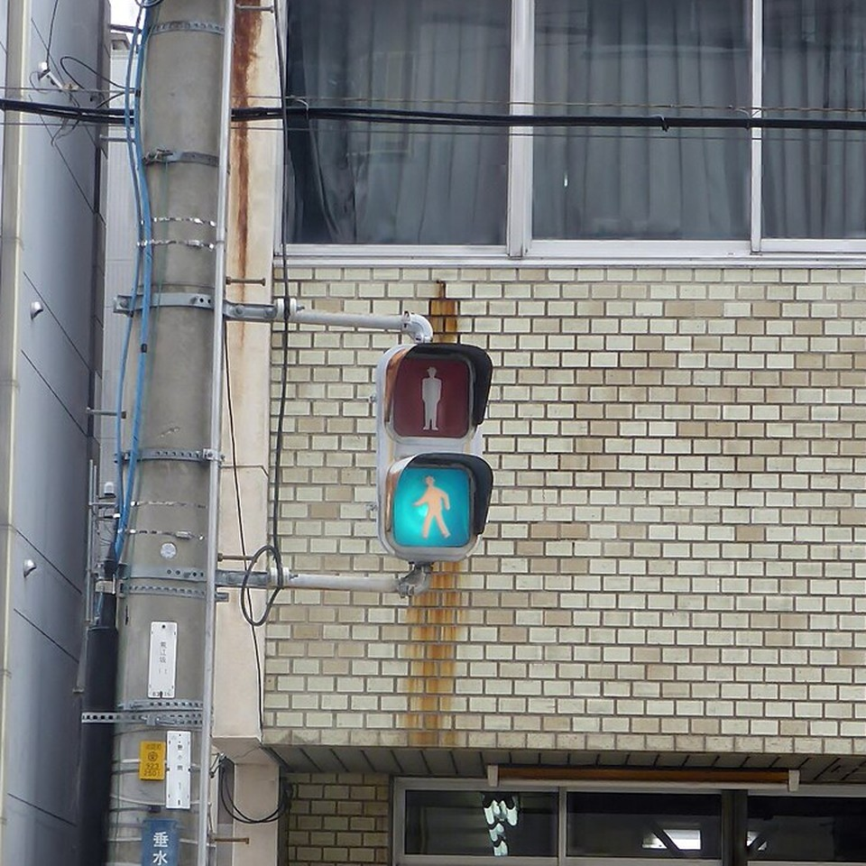
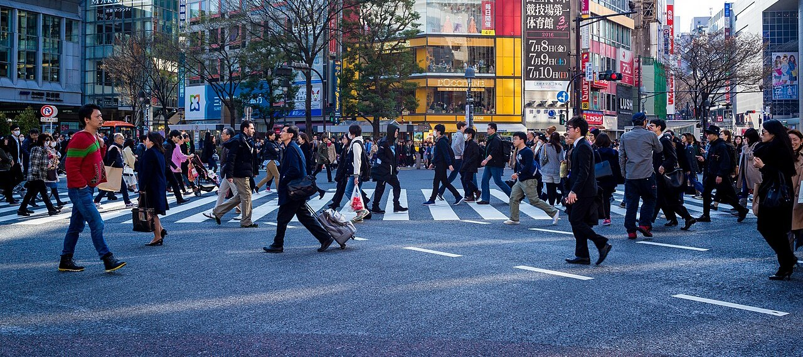

東京・日比谷の交差点、1930年3月。アメリカから輸入された、自動で色が変わる信号機が、日本で初めてここに立ちました。赤・黄・緑の3つの灯には、意味を知らせるために「トマレ」「チウイ」（注意の昔のかな書き）「ススメ」と書かれていたそうです。
それから100年近くたった今も、「進め」の灯は緑色です。英語では green light と呼びます。でも日本では、子どもからお年寄りまで「青信号」。法令の言葉まで「青色の灯火」です。緑色の灯が、なぜ「青」になったのでしょう。

交差点の「進め」の灯は、どう見ても緑色なのに、日本ではみんな「青信号」と呼びます。1930年の最初の信号機から始まる年表と、「あお」という言葉の範囲を表す色の帯、信号の色の範囲の図で、そのわけをたどります。呼び名と灯の色、先に動いたのはどちらだったのでしょう。
東京・日比谷の交差点、1930年3月。アメリカから輸入された、自動で色が変わる信号機が、日本で初めてここに立ちました。赤・黄・緑の3つの灯には、意味を知らせるために「トマレ」「チウイ」（注意の昔のかな書き）「ススメ」と書かれていたそうです。
それから100年近くたった今も、「進め」の灯は緑色です。英語では green light と呼びます。でも日本では、子どもからお年寄りまで「青信号」。法令の言葉まで「青色の灯火」です。緑色の灯が、なぜ「青」になったのでしょう。
「あお」は、もともと緑までふくむ色の名前だったから。
1930年の信号機は、アメリカの「赤・黄・緑」をそのまま持ちこんだものでした。ところが、新聞は違いました。乗りものニュースによると、当時の新聞は最初の自動の信号機の色を「青・黄・赤」と報じています。
一方、1933年に定められた信号の運用の公式文書では、英語の green light にならって「緑信号」と書かれていました。決まりの上では、まだ「緑」だったのです。それでも人々のあいだには、新聞の書き方とともに「青信号」という呼び名が広まっていったという説があります。
戦後の1947年、法令の言葉も「緑」から「青」に改められました。今の道路交通法施行令（法律にもとづいて内閣が定める細かい決まり）でも、「進め」の灯は「青色の灯火」です。言葉のほうが、人々の呼び方に合わせたのです。

新聞が緑の灯を「青」と書いたのは、うっかりの間違いではありません。日本語では昔から、緑のものを「あお」と呼んできました。若葉は「青葉」、小松菜やほうれん草は「青菜」、熟す前の緑の実は「青りんご」「青梅」。どれも今も使う言葉です。
色の研究者・栗木一郎さん（東北大学、当時）によると、古い日本語で色の名前の土台になった言葉は「あか・くろ・しろ・あお」の4つ。この「あお」は、今でいう青と緑の両方をふくむ、幅の広い言葉でした。
栗木さんが紹介する和歌の研究では、青と緑を分けて意識し始めたのは平安時代の終わりから鎌倉時代ごろと見られています。それでも区別はゆるやかでした。1872年（明治5年）に出た和英辞典『和英語林集成』では、「aoi」に light green or blue（明るい緑、または青）という訳が付いています。


では、言葉に合わせて灯の色まで青に変えたのでしょうか。答えは「いいえ」です。信号の色のよりどころは、国際照明委員会（CIE、光と色の基準を話し合う国際的な団体）が示す範囲で、「進め」は緑の範囲です。
灯の色が話題になるのは、言葉が変わったあとです。1970年代のはじめに、警察庁が「進め」の灯を青に近い緑にする通達を出したとされます。ただし、その時期には諸説あります。
方針が決まっても、街の灯がそろうには時間がかかりました。1982年の照明学会誌の論文では、研究者3人が川崎市登戸の周辺の信号を見たところ、青に見えるものから黄みがかった緑に見えるものまで、ばらばらでした。
論文は、当時の日本の決まりの色の範囲は CIE の緑と一部が重なるだけで、「国際性のない色」だと指摘しました。そして範囲を CIE の緑に合わせ、呼び名も「緑信号」に改める案を示しています。色も呼び名も緑にそろえるべきだ、という主張です。
それから35年後の2017年、栗木さんは、日本の信号は CIE の緑の範囲の中でも最も青寄りの色の光を使っている、と説明しています。いまの灯は国際的な緑の中に収まりながら、呼び名の「青」のほうへ、ぎりぎりまで歩み寄っているのです。


実は、世界の「進め」の緑も、もともと少し青み寄りです。1982年の論文によると、CIE は1980年の勧告で、色覚に特性のある人にも見分けやすいように、信号の緑の範囲を狭めました。日本のいまの灯は、その緑の中のさらに青い端にあたります。
色の見え方には生まれつきの個人差があり、赤と緑の区別がつきにくい人もいます。黄みの強い緑は、そうした人には赤や黄とまぎらわしくなりがちです。オランダ道路安全研究所の1981年の報告は、こうした人のために、信号の緑には青みの緑を推奨しています。
警察庁によると、日本でも歩行者用の LED 信号のデザインを決めるときに、色弱の人や弱視の人、高齢者に見てもらう試験が行われました。信号の色は、言葉の歴史だけでなく、だれにでも見分けられるかどうかも考えて選ばれているのです。

1930年に最初の信号機が立ってから、1947年に法令の言葉が「緑」から「青」になるまでの年数Wikipedia 日本語版「日本の信号機」、乗りものニュース
日本の男性のうち、生まれつき赤と緑の区別がつきにくい特性をもつ人の割合（約5%）。女性は約0.2%日本医事新報社 Web医事新報、2023年
道路の標識や信号を国どうしでそろえる「ウィーン条約」が結ばれた年。「進め」は緑。日本はこの条約に加わっていないWikipedia 英語版
2017年、栗木さんは、日本語で青と緑を区別するプレッシャーがかかれば、その過程で信号も「緑信号」と呼ばれるようになるだろうと話しています。ただし、「青」と呼ぶことで目立った不利益やトラブルがなければ、20年ほどでは切り替わらないかもしれない、とも。
そう言える根拠は、色の名前が今も動いていることです。栗木さんらは同じ年、日本人の参加者にたくさんの色を見せて名前を答えてもらう実験の結果を発表しました。約30年前の似た調査とくらべると、「水色」を青とは別の色として使う人がはっきり増えていました。
参加者の98%が「水色」を使ったのです。黄緑のあたりでは、昔の「草色」にかわって「抹茶」という名前も現れました。「あお」から「みどり」が分かれたのは、遠い昔の話だけではないのです。
次に交差点で信号を待つときは、「進め」の灯をじっくり見てみてください。緑にも青にも見えるその色には、100年近くかけて言葉と光が歩み寄ってきた歴史がつまっています。